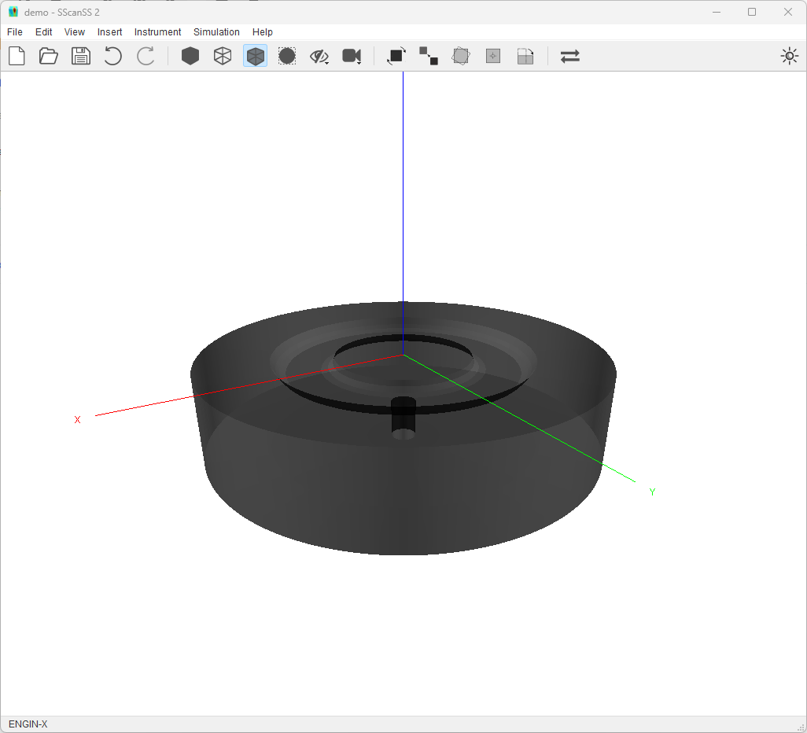
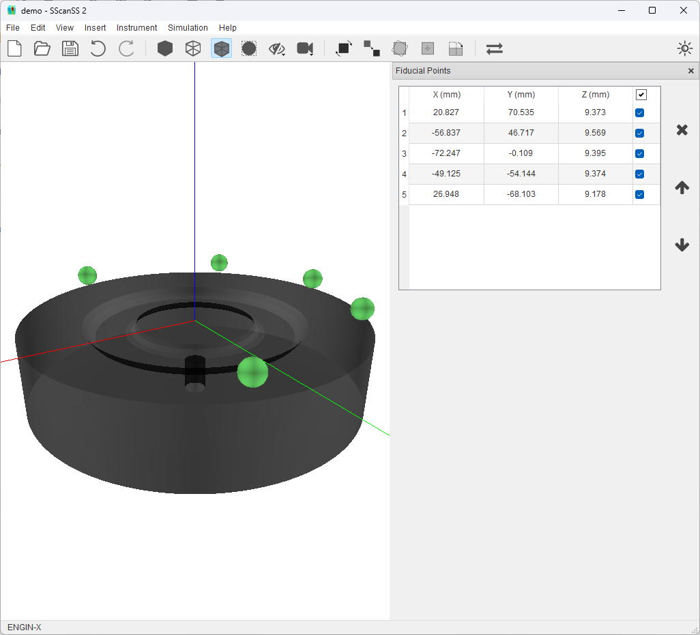
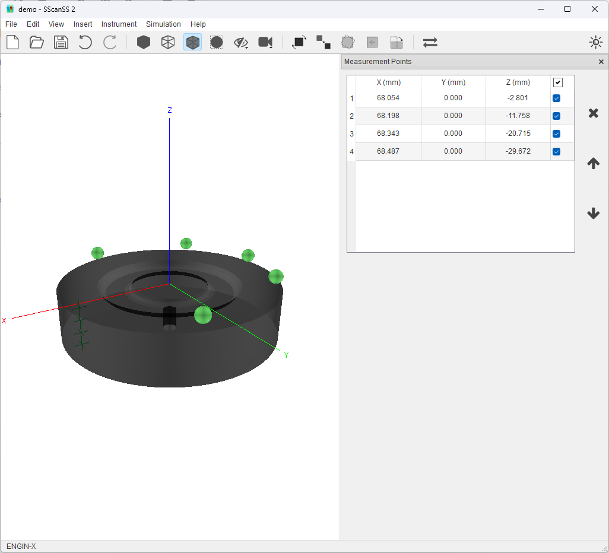
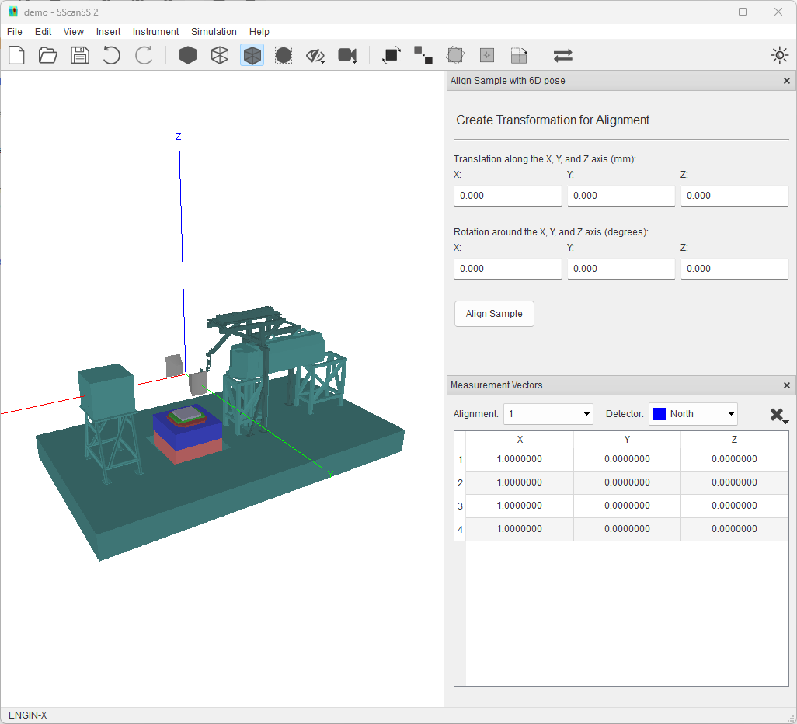
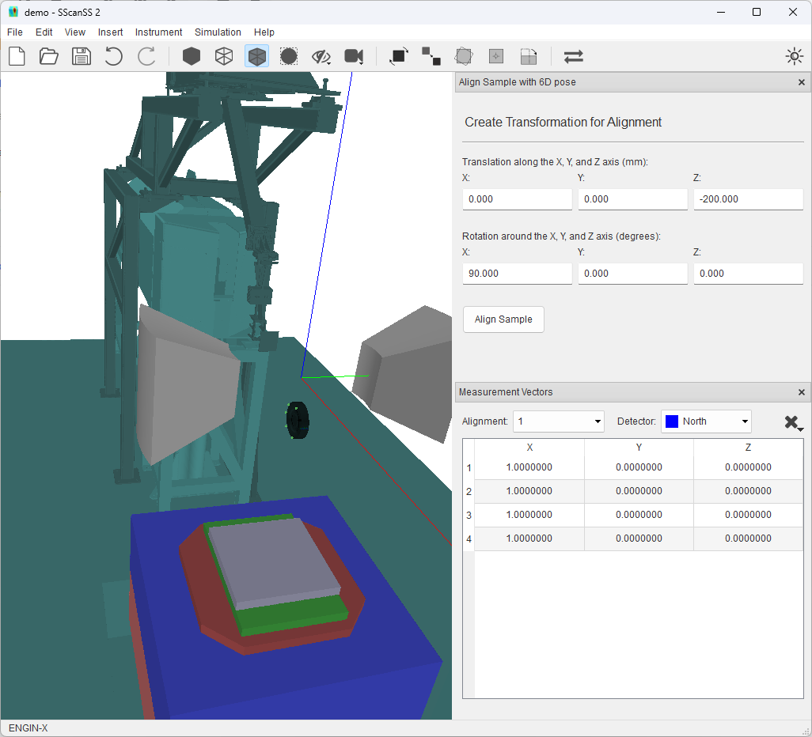

Basic Example¶
This tutorial illustrates the basic ideas behind the SScanSS 2 software. The files used in this tutorial can be found in the examples/simple folder in the install directory. This tutorial uses the ENGIN-X instrument and the steps shown should apply to other instruments.
We begin by creating a new project, click File, and then click New Project. You will see the new project dialog. Type in a project name, select ENGIN-X as the instrument and click create.

Setting up the Sample¶
1. Click Insert > Sample > File and browse to the location of the data folder and select simple.stl. You will see the sample model in the graphics window.
{kind=link}
2. Click Insert > Fiducial Points > File and browse to the location of the data folder and select simple.fiducial. You will see the green spheres added in the graphics window.
{kind=link}
3. Click Insert > Measurement Points > File and browse to the location of the data folder and select simple.measurement. You will see the green crosses added in the graphics window.
{kind=link}
3. Click Insert > Measurement Vectors > Select Strain Component the select stain component “Parallel to X Axis”. Click Add Measurement Vectors and in the graphics window, you will see the blue line segments drawn from the measurement point along the X Axis.

Simulating a Scan¶
1. Before we can simulate, the sample must be aligned on the instrument. To do this, go to Instrument > Align Sample on Instrument > 6D Pose, you will see a new dialog and the model of the instrument in the graphics window.
{kind=link}
2. Specify a Z Axis translation of -200 and X Axis Rotation of 90. Click Align Sample, you see the sample model, fiducials, measurement points and vector
{kind=link}
3. Start a new simulation by clicking Simulation > Run Simulation or the F5 key. You will see the instrument move the sample into the appropriate position and orientation for each measurement and the results displayed in simulation window
{kind=link}
4. The script to perform the measurement on the real world instrument (if the sample was mount exactly the same) can be exported by clicking File > Export > Script and then click Export on the script dialog.